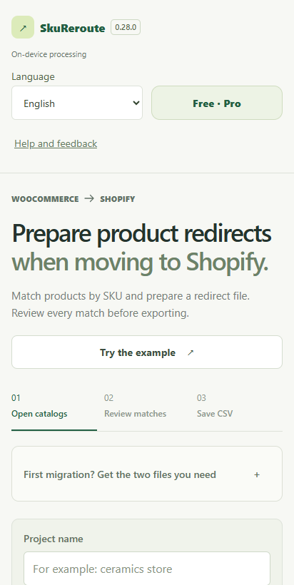

A practical migration checklist
Same products.
New store.
Keep a clear redirect plan.
Moving from WooCommerce to Shopify? Start with the old URLs and exact SKUs. Review the exceptions before you import any redirects.
SkuReroute for Android is available on Google Play. Start free with up to 20 redirects per export.
Get SkuReroute on Google PlayUse the redirect checklist ↓
One product. One reviewed destination.
Fictional teaching example. Keep the SKU as text so its leading zeros survive.
- Exact SKU
001-MUG- Old path
/catalog/stoneware-mug/- New target
/products/stoneware-mug
Redirect from,Redirect to
/catalog/stoneware-mug/,/products/stoneware-mugExample URLs only. Do not import this sample into a live store.
Before you import: four checks
- Export both catalogs.
Keep the original files. Retain the exact SKU and the real old product URL; a product name alone is not a reliable URL. - Review ambiguous matches.
Inspect repeated SKUs, variants and multiple destinations. SkuReroute helps you review matches; resolve exceptions using the actual products. - Check the destination and existing rules.
Open the new product page. Check existing redirects and whether the old path still serves a page. Avoid conflicting destinations and redirect chains. - Import in Shopify, then test.
Download the reviewed redirect CSV, import it yourself in Shopify and check representative old links on the published store. Keep a copy of the mapping.
Where SkuReroute helps
Import catalogs, match products by SKU, review problems and export a redirect file. Processing happens on your device. SkuReroute does not move your store or apply redirects to Shopify for you.
Start free
Import and review your catalog, save projects and export up to 20 redirects at a time.
Pro is a one-time purchase
Unlock unlimited redirect exports and the full matching report. The price shown by Google Play applies to your country. Purchased Pro stays active permanently; use the same Google account to restore it after reinstalling.
Interface languages: English, Русский, Українська, Deutsch, Français, Español, 简体中文.
A redirect plan reduces guesswork. It does not guarantee preserved rankings or prevent every migration issue. Check your actual store configuration.
SkuReroute for Android is available on Google Play. Start free with up to 20 redirects per export.
Get SkuReroute on Google PlayPlatform instructions
Use Shopify’s current instructions for the actual import and for the wider migration. This guide covers product redirect preparation.